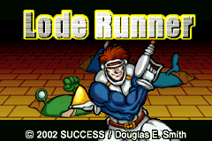

Lode Runner (Japan)
EEPROM 4K gbakit Built-In 📺 Joybus 💾 MultiBoot 🎮 4P Link
Cartridge Identity
- Game Code
A39J(FamilyA39)- Header Title
LODE RUNNER- Maker / Revision
8N/ rev0- ROM Size
- 4.0 MiB (4,194,304 B)
- Save Media
EEPROM 4K- SHA-256
fb0c784708af1d93f30b2e8063f16f7500d81e9a0edc56c983eff738e18f8de8
Screenshots

Link Cable & Multiplayer Communications
This title contains detected communication capabilities: 📺 Joybus 💾 MultiBoot 🎮 4P Link.
Detailed protocol specifications, SIO registers, Joybus commands, and MultiBoot sequences are documented in the Link & Multiplayer Reference.
- Multi-Player SIO (4P)
- 16-bit ring network · SIOCNT (
0x04000128) literals:0x0033f0,0x0034ac,0x0034ec· SIODATA32/SIOMULTI0 (0x04000120) literals:0x003acc,0x032b84 - GameCube Joybus
- Register literal
REG_JOYCNT(0x04000140) at offset0x01d63c - Single-Cart MultiBoot
- Single-Cartridge MultiBoot (Download Play) client/server handler · Thumb SWI 0x25 (
0xDF25):0x04f62e,0x06a698,0x152c60
Battery Save Support in gbakit
Built-in definition (A39J)
gbakit save verify A39J save.sav
gbakit save decode A39J save.sav
gbakit save fix A39J damaged.sav -o repaired.savText, Fonts & Scene Data
- Primary Text Encoding
- Compressed / custom-encoded text (
1ASCII strings) - Font & VWF Indicators
- VWF Width Table 1bpp Font · BIOS SWIs: BitUnPack
0x10:11· LZ770x11/12:17· Huffman0x13:3· RLE0x14/15:12 - Scene & Packaging
33ROM pointer tables (≥32 entries,1≥200) ·0relativeu32TOCs ·49OAM metasprite hits
Hardware MMIO Subsystems
ppu_display0x80013c8,0x802e32c,0x802e3c8,0x802e654,0x802eb7c,0x802f5c0,0x8030f9c,0x80310d4,0x8031568,0x8031874